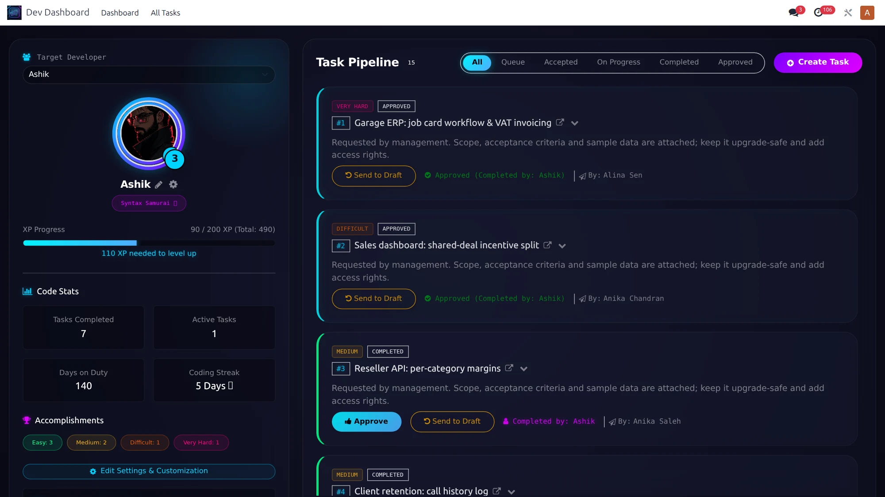
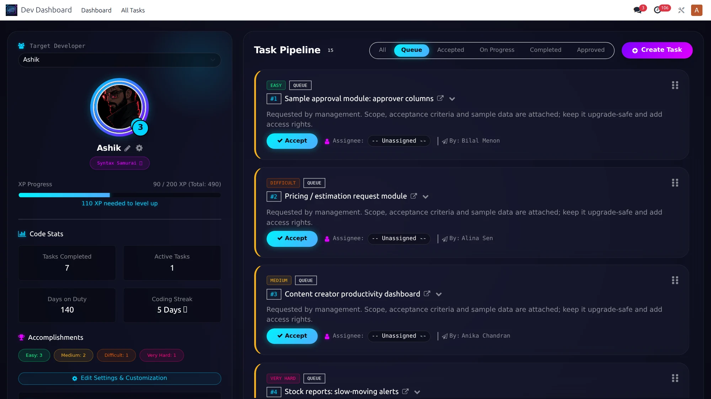
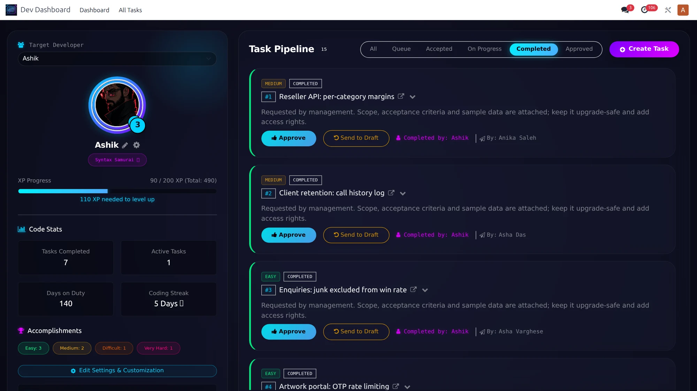
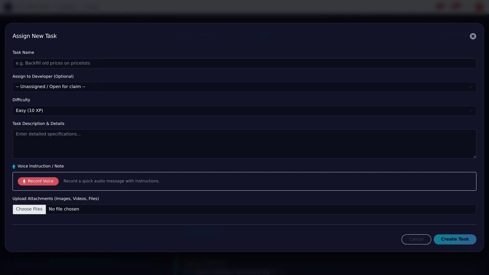
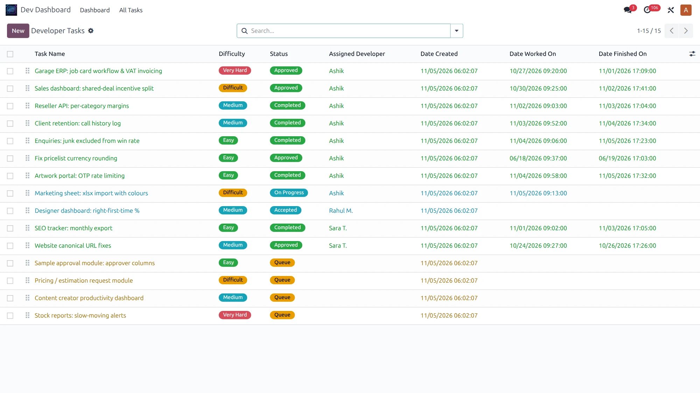

App 01 · Engineering
A gamified task board for the tech team. Managers queue and prioritise work, developers pick it up, and every approved task earns XP by difficulty, so the manager can see who delivers and at what level.

Captured from the real module on an anonymised copy of the database. Names are fictional, and confidential figures are blurred. Click any screen to enlarge it.
The board: profile with level, rank and XP bar on the left, the prioritised task pipeline on the right.
Queue: new requests wait here, ordered by urgency (drag to reorder). A developer accepts one to lock it in.

Completed work waits for the manager's approval. Approved tasks pay out XP by difficulty.

Creating a task: difficulty sets the XP, with voice-note instructions and file or video attachments.

All tasks with status, difficulty, assignee and the dates each stage was reached.
